Mihama, Wakayama: things to do, food and stays
Mihama · Wakayama
Mihama
Highlighted on the Wakayama map.
Stay
ホテル グリーンヒル美浜
Hotel Gurinhiru Mihama
Dining
C's diner
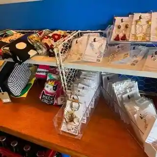
C's diner
みはる
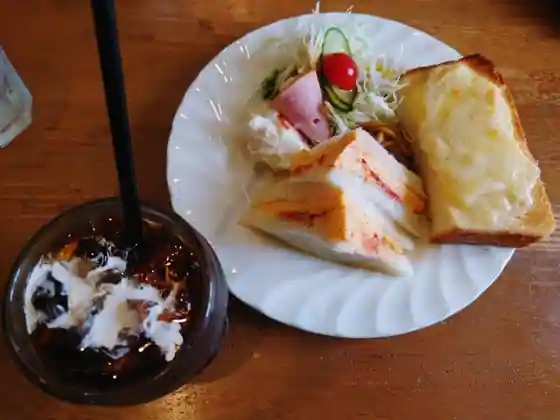
Miharu
パンドコウ
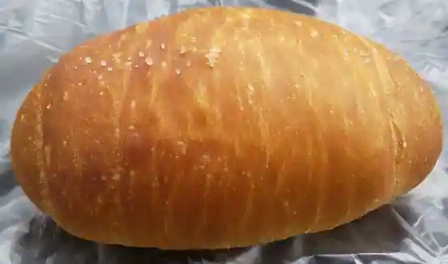
Bakery Dokou
すてぶすとん アメリカ村食堂
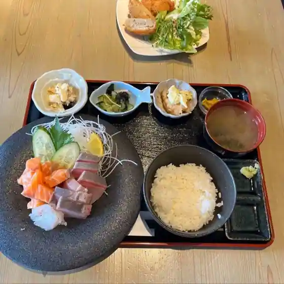
Sutebusuton Amerika Mura Shokudo
煙樹
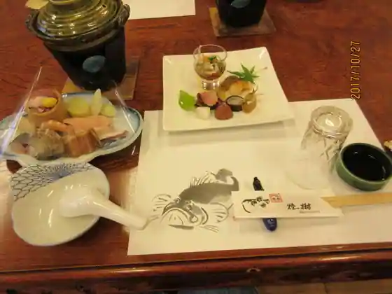
Enju
縁
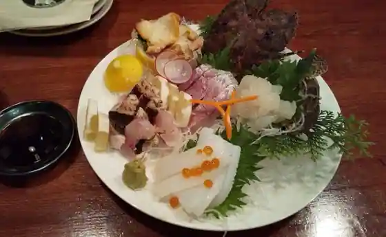
Heri
しいざきのおうち
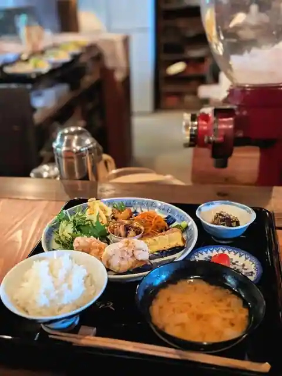
Shizakinochi
奈菜彩酒場
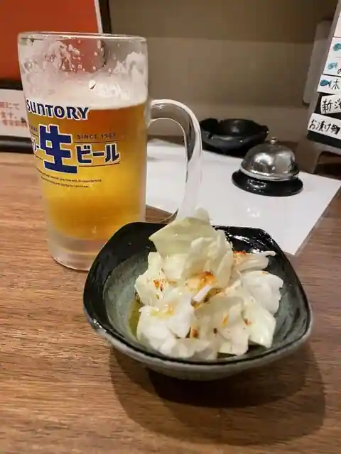
Nana Sai Sakaba
ベーグル&おむすび おはな結び
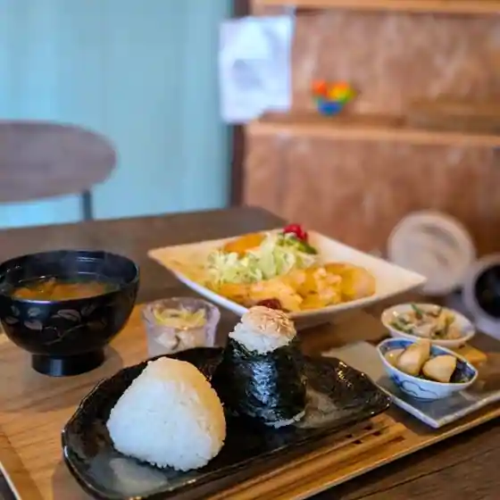
Beguru & Omusubi Ohana Musubi
美佐
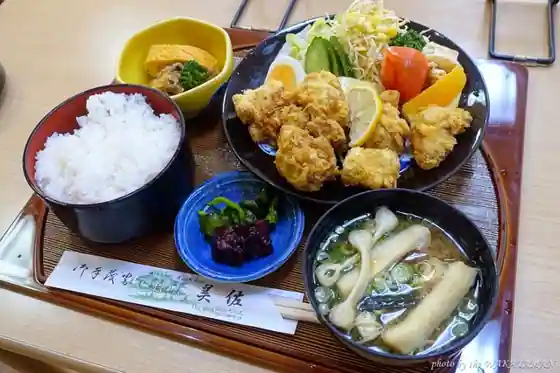
Misa
パン工房 エトワール
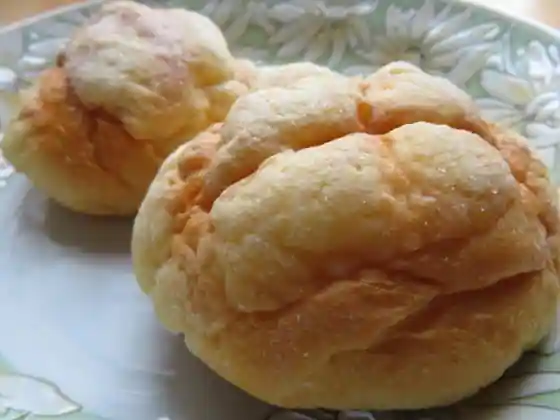
Bakery Kobo Etowaru
創造ダイニング みやき
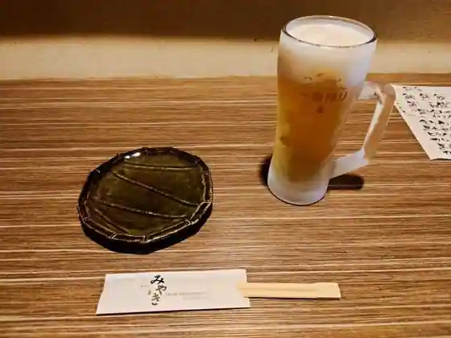
Sozo Dining Miyaki
麺と向かって「みお」
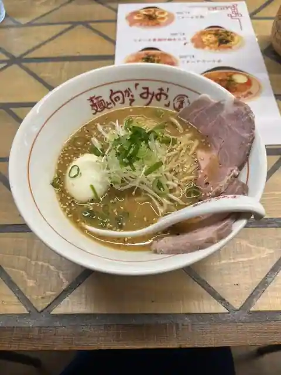
Men To Muka Tte (Mio)
伽羅
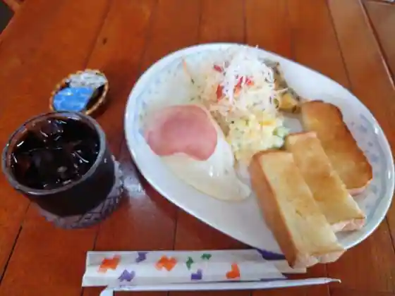
Kara
M LOG 木とカフェ
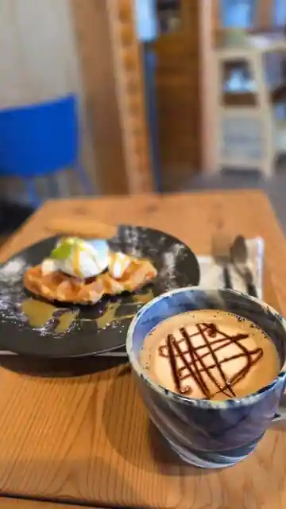
M LOG Ki To Cafe
鉄板酒場 UMENO
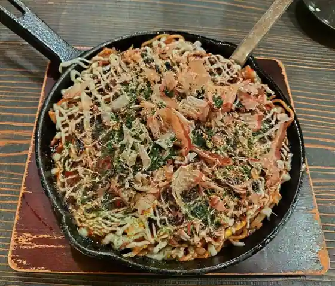
Teppan Sakaba UMENO
なずな
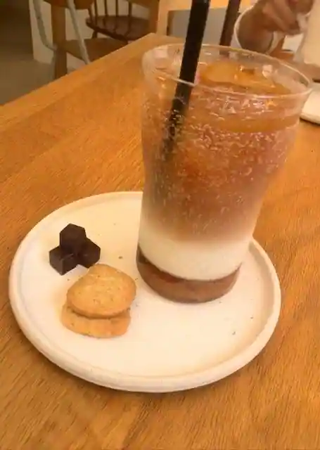
Nazuna
八寸
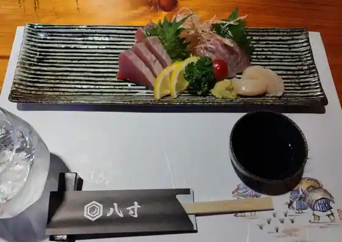
Hachi Sun
居酒屋 てん
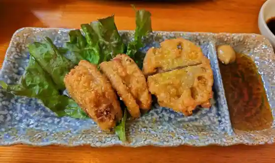
Izakaya
松カフェ
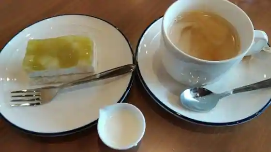
Matsu Cafe
ポレポレ
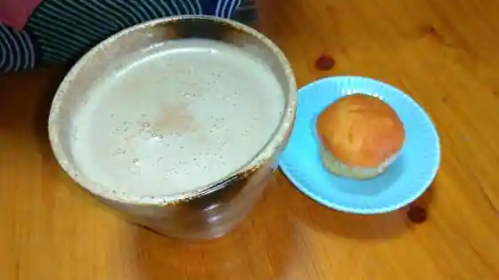
Porepore
Sights
Enjugahama